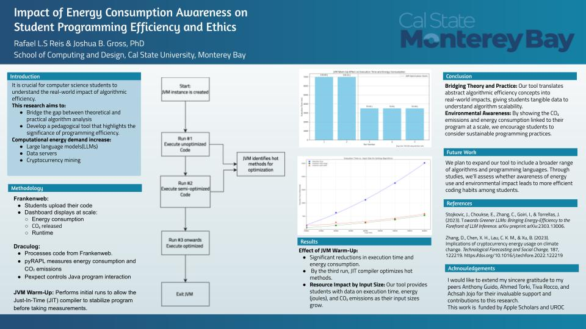
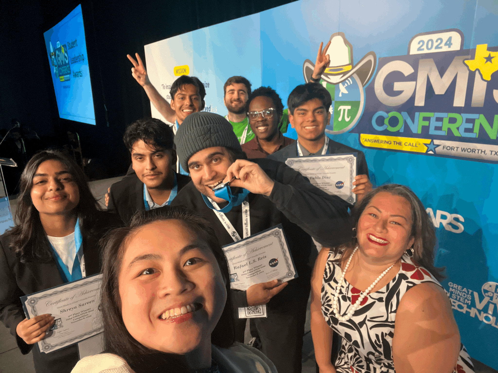

About Me
Welcome to my e-portfolio! I am Rafael L.S Reis, a passionate Computer Science major at California State University, Monterey Bay (expected graduation: December 2025). As an Apple Scholar, I am deeply committed to research and leveraging technology to solve real-world problems and drive innovation.
My research explores topics such as code efficiency, energy consumption, and data-driven problem-solving. I am always eager to learn new skills, engage in challenging projects, and contribute to impactful discoveries.
Research and Achievements
Presented Research Poster at GMiS Texas 2024
Presented a research poster focusing on the relationship between software efficiency and energy usage. This work highlights how optimizing code can contribute to sustainable computing practices.
GMiS STEM Zone Competition
Awarded 2nd place in the GMiS STEM Zone Competition for a root cause analysis challenge. This achievement reflects my problem-solving skills and ability to apply analytical thinking under competitive conditions.
Award Certificate

Received the 2nd Place Award at the GMiS STEM Zone Competition. The certificate represents recognition of my technical and analytical contributions during the competition.
Work Experience
Undergraduate Researcher - Apple Scholar
California State University - Monterey Bay | May 2023 – Present
- Developing RAPL-based software to measure the impact of code efficiency on energy usage.
- Conducting research on the implications of code efficiency in real-world contexts.
Teaching Assistant (Data Structures)
California State University - Monterey Bay | Aug. 2023 – Present
- Transformed grading process by implementing JUnit and Python/Bash automation tools.
- Reduced evaluation time for 80+ students per assignment from 8 hours to a few seconds.
- Instructed classes of approximately 40 students, delivering hands-on lab sessions and lectures.